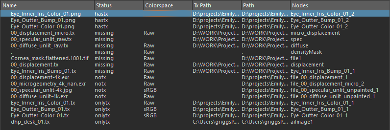

“Tx 管理器”(Tx Manager)窗口可以为同一源文件生成多个具有不同颜色空间的 tx 文件。
Tx 管理器可用于在 Maya 内自动执行将 Maya 纹理文件和 Ai 图像文件转化为 .tx 文件格式的过程。它可以转化当前场景中的纹理或某个文件夹（及其子文件夹）中的所有纹理。此外，您还可以指定是否要转化特定纹理。Tx 管理器可从 Arnold 菜单和 MtoA 工具架中访问。
有关使用 .tx 的详细信息，请访问 maketx 页面。
搜索当前场景中的可用纹理，且在“Tx 管理器”(Tx Manager)窗口中列出纹理路径。
选择场景中所有可用的纹理文件。
选择所有尚未处理为 .tx 文件的纹理。
选择所有缺少文件的纹理。
用于将所有选定纹理替换为在选定文件夹及其子文件夹中找到的图像。此功能与原生纹理管理器的“重新链接”(Relink)功能相同。
这将显示当前 Maya 场景内存在的文件纹理。

单击文件路径名可在属性编辑器中查看相应的纹理
使用“纹理文件夹”(Textures Folder)内存在的纹理文件。
设置用于在当前 Maya 场景中查找纹理的选项。
要扫描文件纹理路径的节点类型和属性的列表。
添加要在场景中搜索的新节点类型和属性。
从列表中移除选定的属性。
允许您向转化过程添加参数。默认参数使用标志 -u（更新图像）和 --oiio (OpenImageIO)。
仅当存在输入纹理的新版本时更新 .tx 文件。
显示有关将纹理转化为 .tx 的信息。
检查源纹理中是否存在 NaN 值，如果存在，则将发出警告。
打印有关输出 .tx 文件的统计信息。
在转化之前对输入纹理取消预乘。
用于转化的 CPU 线程数。
选择选项的预定义预设，Arnold 始终会向 maketx 选项添加 --oiio。
添加 maketx 从 maketx 选项接受的任何自定义参数。
可用的 maketx 选项
| 标志 | 描述 |
|---|---|
--help |
输出帮助消息 |
-v |
详细状态消息 |
-o %s |
输出文件名 |
--threads %d |
线程数（默认值：#cores） |
-u |
更新模式 |
--format %s |
指定输出文件格式（默认值：根据扩展名推测） |
--nchannels %d |
指定输出图像通道数。 |
-d %s |
将输出数据格式设置为以下选项之一：uint8、sint8、uint16、sint16、half、float |
--tile %d %d |
指定分片大小 |
--separate |
使用平面配置分隔（默认值：连续） |
--fov %f |
envcube/shadcube/twofish 的视野 |
--fovcot %f |
覆盖帧宽高比。默认值为宽度/高度。 |
--wrap %s |
指定包裹模式（黑色、区间限定、周期性、镜像） |
--swrap %s |
单独指定 s 包裹模式 |
--twrap %s |
单独指定 t 包裹模式 |
--resize |
将纹理大小调整为 2 的幂（默认值：否） |
--noresize |
不将纹理大小调整为 2 的幂（已弃用） |
--filter %s |
选择用于调整大小的过滤器（选项：长方体、三角形、高斯、catrom、blackman-harris、sinc、lanczos3、radial-lanczos3、Mitchell B 样条线、圆盘，默认值 = 长方体） |
--nomipmap |
请勿创建多个 Mipmap 级别 |
--checknan |
检查 NaN/Inf 值（找到后中止）。 |
--Mcamera %f %f %f %f %f %f %f %f %f %f %f %f %f %f %f %f |
设置摄影机矩阵 |
--Mscreen %f %f %f %f %f %f %f %f %f %f %f %f %f %f %f %f |
设置摄影机矩阵 |
--hash |
在标头中嵌入像素的 SHA-1 哈希（已弃用。始终计算哈希）。 |
--prman-metadata |
添加 prman 特定的元数据 |
--constant-color-detect |
从恒定颜色输入创建 1 分片纹理 |
--monochrome-detect |
从单色输入创建 1 通道纹理 |
--opaque-detect |
删除始终为 1.0 的 Alpha 通道 |
--stats |
输出运行时统计信息 |
--mipimage %s |
指定单个 MIP 级别 |
| 基本模式（默认值为单色纹理） | |
--shadow |
创建阴影贴图 |
--envlatl |
创建纬度/经度环境贴图 |
--envcube |
创建立方体环境贴图（文件顺序：px、nx、py、ny、pz、nz）(UNIMP) |
| 颜色管理选项 | |
| `--colorconvert %s %s | 将颜色空间转化应用于图像。如果输出颜色空间的位深度与输入颜色空间不同，您需使用 -d 选项将数据格式设置为正确的位深度。（选择：线性、sRGB、Rec709） |
| `--unpremult ``` | 在转换颜色之前取消预乘，在转换颜色之后预乘。如果图像包含 Alpha 通道，您可能需要使用此标志。 |
| 配置预设 | |
--oiio |
针对分片大小、平面配置、元数据和恒定颜色优化使用 OIIO 优化的设置。 |
--prman |
针对分片大小、平面配置和元数据使用 PRMan 安全的设置。 |
预览当前选定的参数。
选中此选项将通过 MtoA 的“自动 TX”(auto-tx)选项使用默认值。
开始将纹理文件转化为 .tx 文件格式。如果取消，此过程将在当前文件处理之后结束。
删除与选定纹理关联的所有 .tx 纹理文件。
Tx 管理器支持的文件格式与 maketx 支持的文件格式相同：